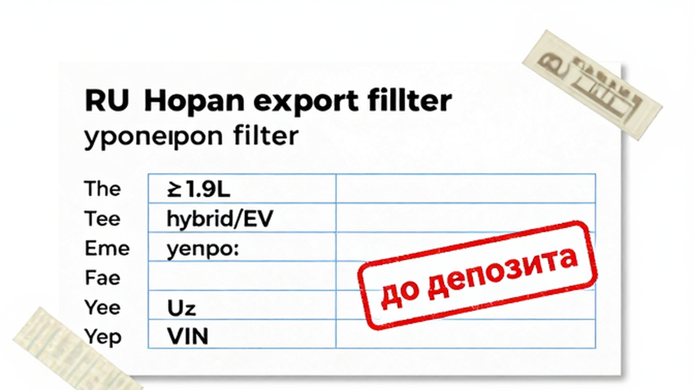
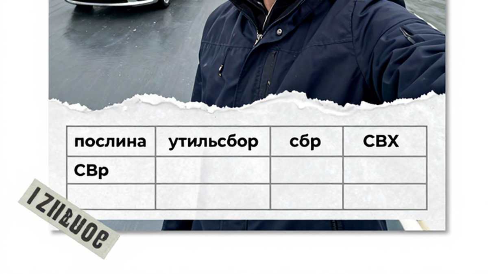
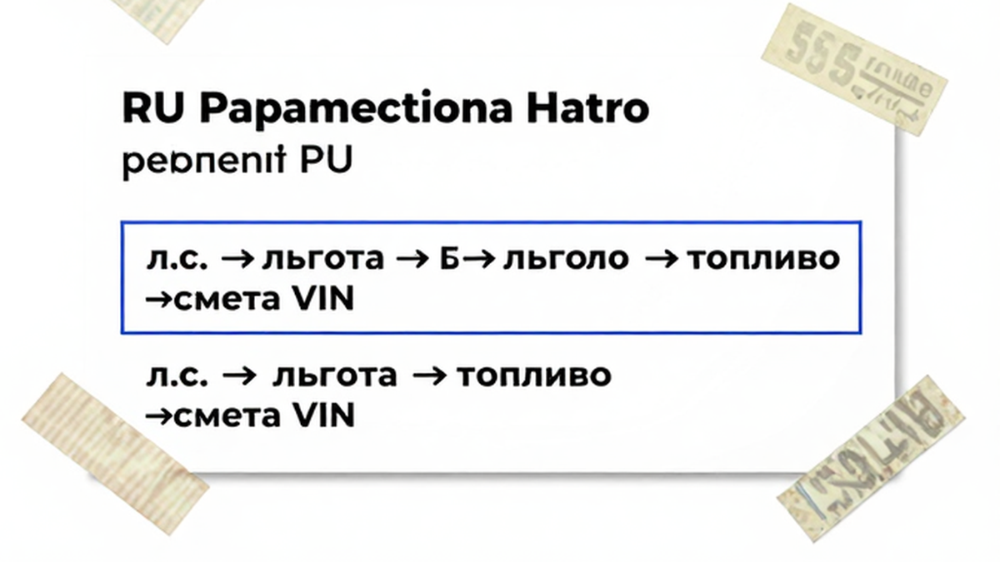

Сергей из Новосибирска уже почти перевёл задаток за Toyota "под заказ из Японии за 1,2 млн". В чате сказали: "растаможка ещё тысяч 300". Потом всплыли мощность выше 160 л.с., японский фильтр на вывоз и простой на СВХ во Владивостоке. Знакомо? Растаможка авто из Японии в 2026 – не одна цифра, а чек-лист до депозита: что можно вывезти, из каких блоков смета и куда запросить расчёт под ваш лот.
TL;DR / Быстрый инсайт: До оплаты сверьте объём ДВС (обычно до 1,9 л), тип топлива и мощность. "Растаможка" складывается из единых ставок ЕАЭС, утильсбора, таможенного сбора и цепочки СБКТС → ЭПТС. Готовые суммы в статье не публикуем: параметры лота отправьте в каталог Авто-Сейлс за сметой. Без экспорта из Японии растаможка во Владивостоке бессмысленна.
Мы во Владивостоке видим одну и ту же ошибку: человек смотрит цену аукциона и думает, что это почти "цена под ключ". На практике аукционный лист – только старт. Дальше море, склад временного хранения (СВХ – по сути платная парковка у таможни), платежи и лаборатория. Ниже – чек-лист новичка: что проверить сегодня, ещё до перевода денег.
Сюрприз для многих: "дешёвый" лот часто нельзя даже вывезти. С августа 2023 Япония ограничила экспорт в РФ авто с ДВС больше 1,9 л, полных гибридов и электрокаров. Мягкие гибриды до 1,9 л – отдельная оговорка, её нужно уточнять по конкретной комплектации. Если фильтр не пройден, красивая цена на аукционе вас не спасёт.

Боль простая: купить лот, который не выедет из порта. Делайте стоп-правило до любой оплаты.
Сделайте: сначала экспортный фильтр, потом разговор про деньги. Не делайте: верить фразе "все так возят" без сверки объёма и типа силовой установки.

Типичная ошибка – искать один "калькулятор растаможки" и считать его истиной навсегда. Например, чужой скрин с прошлого месяца уже может не совпасть с вашим объёмом и мощностью. Курсы, ставки и льготы живут датой оформления. Нам важнее карта блоков, чтобы вы понимали смету своими словами.
| Блок | Простыми словами | От чего зависит | Где считать точно |
|---|---|---|---|
| А. Единые ставки ЕАЭС | Платёж "за ввоз для себя" по правилам ЕЭК №107 | Возраст авто (до 3 / 3–5 / старше 5), объём двигателя | Смета на дату оформления |
| Б. Утильсбор | Отдельный сбор; часто главный "сюрприз" бюджета | Мощность, объём, статус физлица, год и правила после 01.12.2025 | Смета под параметры лота |
| В. Таможенный сбор | Плата за оформление декларации | Категория оформления | В смете брокера/сопровождения |
| Г. Документы + логистика | СБКТС, ЭПТС, при необходимости ЭРА-ГЛОНАСС, фрахт, СВХ | Маршрут, сроки выпуска, очередь | Календарь Владивостока + смета |
Схема пути:
Японский аукцион → Море (ролкер) → СВХ Владивосток → Декларация и выпуск → Лаборатория (СБКТС) → ЭПТС → Учёт в ГИБДД
На практике смета без блока Г – дырка в бюджете. Даже если "таможня" посчитана красиво, хранение на СВХ и лаборатория всё равно попросят денег и времени.
Сделайте: просите смету с разбивкой А–Г. Не делайте: сравнивать только цену лота на аукционе с чужим скрином "у меня вышло N".
Параметры лота и запрос расчёта удобно отправить через каталог [REDACTED] или Telegram @[REDACTED] – без форм на этой странице и без самодельного калькулятора.

Второй страх Сергея: льготный сценарий для физлица не подходит, а в чате всё равно назвали "лёгкую" цифру. После изменений правил утильсбора с 01.12.2025 (ПП РФ №1713) в формуле сильнее играет мощность. Порог, о котором чаще всего спорят новички, – около 160 л.с. (117,68 кВт).
Сделайте: в чек-лист до депозита внесите мощность и честный сценарий владения. Не делайте: путать чужие примеры "3400/5200" с машиной мощнее порога – это разные миры бюджета.
Халявы "приплыло и сразу ключи" почти нет. Машина приходит в порт, оказывается на СВХ, идёт декларация. Иногда таможня вызывает покупателя на беседу – так борются с серыми схемами. В пике 2026 выпуск может тянуться дольше привычных 3–5 дней; локальные сигналы говорили и про сроки около 10 дней.
Сделайте: в бюджете держать строку "СВХ/ожидание". Не делайте: бронировать обратные билеты впритык к дате прихода судна.
"Выпустили с таможни" – ещё не финиш. СБКТС (свидетельство безопасности конструкции) – документ лаборатории, что машина соответствует требованиям. ЭПТС – электронный паспорт транспортного средства. Без связки СБКТС → ЭПТС нормально поставить авто на учёт и спокойно ездить/продать обычно нельзя.
В реальном проекте новичок радуется выпуску и забывает лабораторию. Потом выясняется: ездить "как все" рано, а простой снова тикает.
Сделайте: сразу после выпуска бронировать лабораторию и закладывать срок ЭПТС. Не делайте: считать растаможку законченной в момент штампа на декларации.
Критерий успеха простой. До FAQ у вас уже есть заполненный список и отправленный запрос сметы – не "общее понимание темы".
Что изменится после действий: вы не платите "красивую цену аукциона" вслепую. У вас есть стоп-правила по экспорту и мощности, список блоков сметы и запрос расчёта под конкретный лот. Это и есть первый результат без роли таможенника.
Сделайте: депозит только после пунктов 1–8. Не делайте: оплачивать "чтобы не увели лот", пока смета и фильтр экспорта пустые.
Материал проверен: редакция Авто-Сейлс (эксперты по авто под заказ из Японии, Кореи и Китая).
Достоверность: факты сверены с открытыми источниками (логика единых ставок ЕЭК №107, ПП РФ №1713 об утильсборе, публичные разборы экспортных ограничений Японии и практики СВХ Владивостока) и сопровождением заказов; точный расчёт под VIN – в каталоге на дату оформления.
Фиксированной "цены для всех" нет: зависят возраст, объём, мощность, льготы физлица и дата курса/ставок. Соберите параметры лота и запросите смету с блоками А–Г – так вы получите цифру под ваш случай, а не чужой скрин.
Год, объём до 1900 см³, мощность, тип топлива/hybrid, номер лота и возможность экспорта в РФ. Нет полного набора – депозит не переводите.
Он часто отделяет льготный сценарий утильсбора для физлица от более тяжёлого. Перепишите мощность из документов в чек-лист и уточните статус "для себя" до оплаты.
Иногда да: возможна личная беседа или оформление по доверенности/сопровождению. Заранее спросите, кто встречается с таможней, и заложите дни на СВХ.
СБКТС – заключение лаборатории о безопасности конструкции. ЭПТС – электронный паспорт авто. Обычно идут связкой: сначала лаборатория, потом ЭПТС, затем учёт.
Калькулятор полезен как ориентир логики, но не замена смете на дату оформления. Курсы и условия утильсбора меняются – для решения по депозиту берите персональный расчёт.
Заполните чек-лист параметров лота, отметьте экспортный фильтр и мощность, затем отправьте запрос сметы в каталог Авто-Сейлс. Это безопасный первый шаг без попытки "стать брокером за вечер".